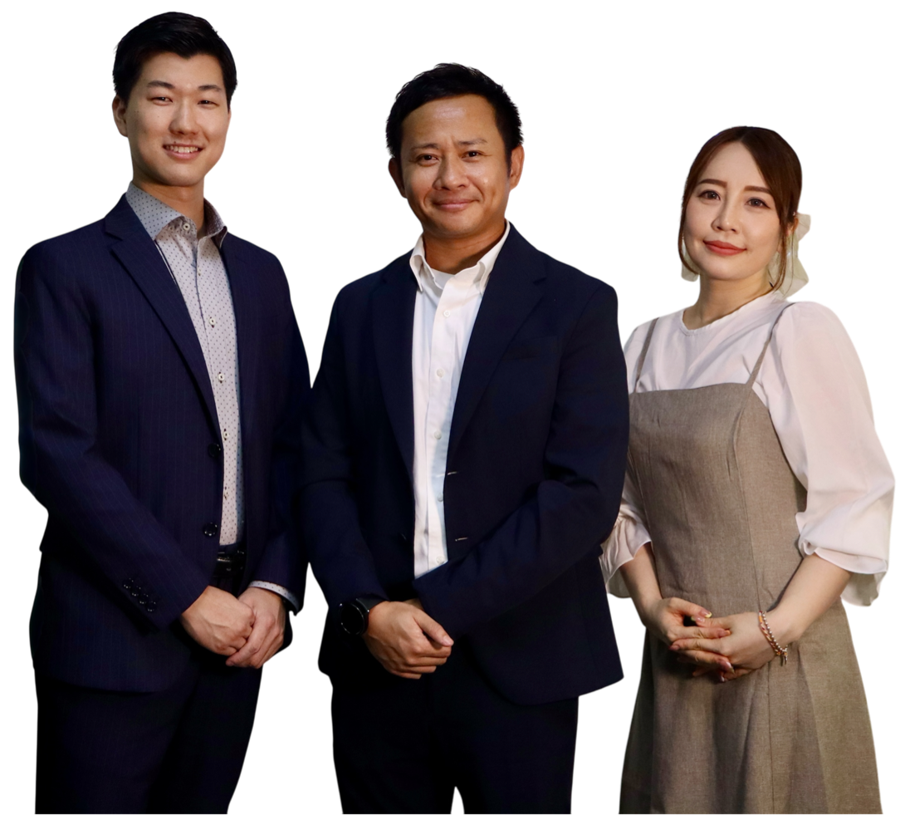
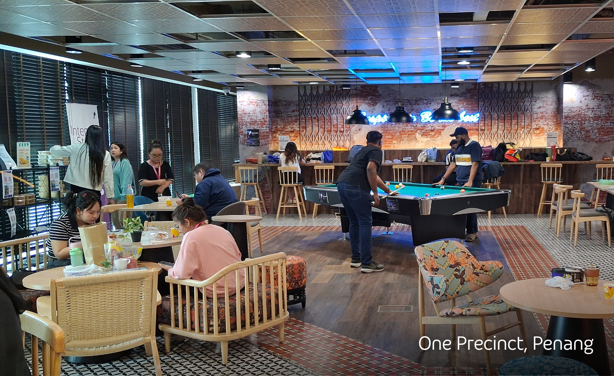

採用チームのご紹介 / Meet the TA Team
応募から入社まで、日本語で丁寧に伴走します。
初めての海外転職でも大丈夫。私たちが一つひとつ、不安を解消します。
私たちのミッション / Our Mission
日本語で伴走
応募～面接～ビザ～入社後まで、各ステップを日本語で丁寧にご案内。海外経験が初めての方も安心です。
等身大の情報提供
求人の魅力だけでなく、生活や働き方の"リアル"もお伝えします。ミスマッチのない入社を目指します。
キャリアの第一歩を支援
入社はゴールではなくスタート。研修・語学・キャリアパスの情報も接続し、長期的な成長を支えます。
採用チームのご紹介 / Meet the TA Team
応募〜面接〜ビザ〜入社まで、日本語で伴走します
📣 採用チームのご紹介
海外で働くことに不安を感じる方も、言葉や文化の違いに戸惑う必要はありません。TPでは、日本語を話すタレントアクイジションチームが、応募から入社までサポートします。

TA Team Group Photo
TP Malaysia TA Team（KL / Penang / Bangkok）

Joseph（ジョセフ）
シニアマネージャー｜タレントアクイジション
こんにちは。TP Malaysiaで日本語スピーカーをはじめとした多国籍人材の採用を担当している、シニアマネージャーのジョセフです。
これまで約14年にわたり、APAC地域を中心に人材採用の業務に携わってきました。
IT、ロジスティクス、半導体、ITインフラなどの業界において、エンジニアやサポート職からマネジメント、Cレベルポジションまで、さまざまなポジションの採用を担当してきました。
日本、マレーシア、シンガポール、タイ、韓国、オーストラリア、ニュージーランドなど、複数国をまたぐ採用プロジェクトに関わる中で、各国の文化や候補者の多様な背景に触れてきた経験を活かし、常に「一人ひとりに寄り添う採用」を大切にしています。
🌴 プライベートでは、スキューバダイビングとゴルフが趣味です。マレーシアではこれらのアクティビティを非常にリーズナブルに楽しむことができ、生活のクオリティも高いと感じています！
✉️ 候補者の皆さまへ：
海外での転職は、大きなチャレンジであると同時に、新しい可能性を広げる素晴らしい機会でもあります。初めての環境に不安を感じる方もいらっしゃると思いますが、選考プロセスや現地の生活についても、できる限り分かりやすくご案内し、安心してご応募いただけるよう心がけています。これまでにも多くの日本語話者の方々が、マレーシアやタイで新たなキャリアをスタートされています。皆さまの挑戦が、より良い未来につながる第一歩となるよう、誠実にサポートさせていただきます。ご応募・ご相談を心よりお待ちしております。
これまで約5000人の日本語話者の方々の面接を担当してきました！次はあなたのBPO業界でのキャリアを一緒にデザインしましょう！

Akito（アキト）
Talent Acquisition｜採用担当
ホスピタリティ出身
原価/在庫/データ分析
フットサル/サッカー
初めまして！TP Malaysiaで採用担当しております、アキトです！
私はこれまで、ホスピタリティ業界での接客や運営・管理業務に携わっており、現場での「おもてなし」だけでなく、データ分析や原価分析を通じて売上・コストの最適化提案を行ってきました。また、在庫管理やレポート作成などの管理部門業務も経験し、今に至ります。そんな私のモットーは、「相手の期待を超える対応」。 「アキトがいたからTPで働くことを決めた」と言ってもらえるような採用担当を目指し、日々努力しています。
🌏 マレーシア生活はまだ初心者ですが、休みの日はローカルや日本人とのフットサルやサッカーを通じて、運動だけでなく人脈・英語力も広がるのを実感できることが日々のモチベーションです！また、日本食や日本製品も手に入りやすく、生活水準も高くキープできるところが、マレーシア移住の大きな魅力です！

Koyori（こより）
Talent Acquisition｜採用担当
ペナン拠点
初海外就職を伴走
ディープグルメ
はじめまして！TP Malaysiaで採用を担当しているKoyoriです。
マレーシアの大学を卒業後、少しだけ日本で"社会人修行"をしたのち、大好きなマレーシアに戻ってきました。現在はペナンを拠点に、日本語対応ポジションを中心に担当しています。
学生時代、マレーシアでインターン先を探していたときに採用のお仕事に出会い、そこからご縁が続いて今に至ります。人が大好きな人間なので、候補者の皆さんとお話しする時間がとても楽しく、日々のやりがいになっています。
私の得意分野は、マレーシアのリアルな魅力を自分の言葉でお伝えしつつ、「初めての海外就職」に寄り添ってサポートができることです。
好きなことはペナンのディープなグルメ巡りと、ちょっとマニアックな国への冒険。最近はシベリアの奥地まで足を運び、本物のハスキーと一緒にオーロラを見に行ってきました！
💬 候補者の皆さまへ — 「海外で働いてみたいけど、本当にできるのかな…？」そんな気持ち、よく分かります。私もそうでした！お仕事はもちろん、ビザ・生活・お部屋探しまで一緒にお話ししながら進めていきます。（「美味しいお店教えて」と言われたら、即リスト出せます！）マレーシア上陸までしっかり伴走しますので、なんでもご相談ください🌏
Taito（タイト）
Talent Acquisition｜採用担当
人材業界出身
営業チームリーダー
海外旅行
初めまして！TP Malaysiaで採用担当をしております、タイトです！🙌
マレーシアの大学を卒業した後、日本で社会人としてのキャリアをスタートしました。
求人広告や人材紹介の営業、チームリーダーとしてマネジメントも経験し、マレーシアに戻ってきました。
エンジニアや、人事、営業等、様々な職種の採用に携わり、100名以上の求職者の採用成功をサポートした実績から一人ひとりの価値観や 将来像に向き合ったキャリア選択の重要性を強く感じています。
「なぜマレーシアで転職を考えているのか」「この先どうなっていきたいのか」を丁寧に伺い、中長期的に考えて、「TPを選んで良かった！」と納得感のある選択ができるよう サポートすることを大切にしています💪
趣味は海外旅行です！✈️
最近は夢だった現地でのサッカー観戦がしたく、イギリスとスペインに行ってきました⚽学生時代は学期休みの際に、マレーシアからベトナムやインドネシア、フィリピンからラオスまで、
様々な東南アジアの国々に行きました。
色々な国に行きましたが、マレーシアに戻ってくると、ご飯はおいしい、インフラが整っている、日本食もたくさんあるなど、改めてこの国の魅力を実感します✨少しでも興味ある方は、お話できたら嬉しいです！
Team & Workplace Shots



サポートの流れ / How We Support You
01
カジュアル面談
ご希望の場合、ご応募前に30分程度の面談も歓迎。マレーシアやタイ勤務や生活についての質問、お仕事のご案内をいたします（選考ではありません）。
02
応募
ご応募後、ご登録のメールアドレスからご連絡いたします。履歴書を提出後、人事との面接のため、日程調整をします。
03
面接
オンライン面接2回（人事→現場チーム）実際の業務について詳細に質問も歓迎です。
04
オファー
勤務形態や開始日についてなどを丁寧にご説明。疑問も一緒に整理します。
05
ビザ申請・渡航
必要書類のご提出後、弊社にてVISA申請、渡航後の空港送迎（MYのみ）到着後のホテル手配をします。
06
入社後
研修・語学支援（GoFluent等）・キャリアアップの道も。
よくある質問（TA向け）
英語に自信がないのですが大丈夫？
日本語中心のポジションも豊富。入社後はLanguage BootcampやGoFluentで段階的に学べます。面接も日本語中心で進行します。
海外が初めてで不安です。
就労ビザサポート、空港送迎、到着後ホテル（マレーシア）など、初期サポートを整備。住居探しも日本語でアドバイスします。
家族帯同はできますか？
就労ビザ取得後、配偶者・お子さまのDependent Pass申請が可能です（国・雇用条件により異なるため、個別にご案内します）。
応募から入社までの目安は？
全体の目安は2〜3週間程度（書類→面接2回→最終結果）。就労ビザは内定後1〜2か月が目安です。